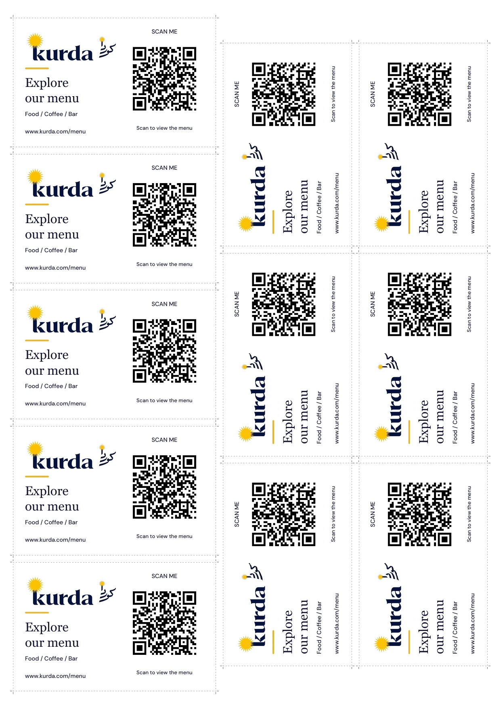

A little card.
The whole menu.
11 cards on one A4 sheet. Each cut card is 85 mm wide × 54 mm high, ready for a landscape holder.
Print settings
A4 paper · portrait · Actual size / 100%
Turn off “Fit to page”. Print one PDF page per sheet, then cut along the dotted outlines. Six cards are rotated on the sheet to fit more; turn them horizontally after cutting.
The QR codes open www.kurda.com/menu in English, Sorani Kurdish or Arabic.
Back to the menu